Datacommunicatie en netwerken
Bachelor in de elektromechanica – automatisering
Tom Demets | Stefan Lievens
tom.demets@hogent.be | stefan.lievens@hogent.be


Bachelor in de elektromechanica – automatisering
Tom Demets | Stefan Lievens
tom.demets@hogent.be | stefan.lievens@hogent.be

In de datalinklaag adresseren we binnen een … met …
In de netwerklaag adresseren we binnen een … met ...
____________
____________
Please Do Not Take Anything
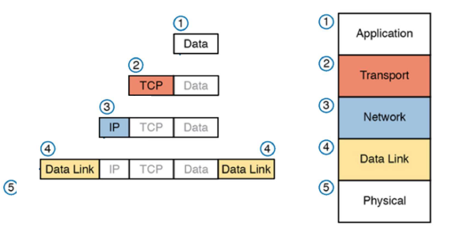

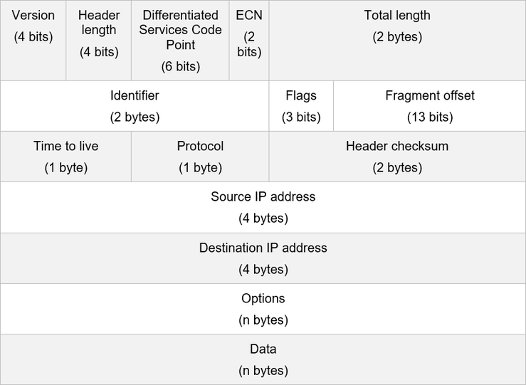
Data
Frame
Pakket
!!!
Prioriteit in WAN
Keuze TCP/UDP
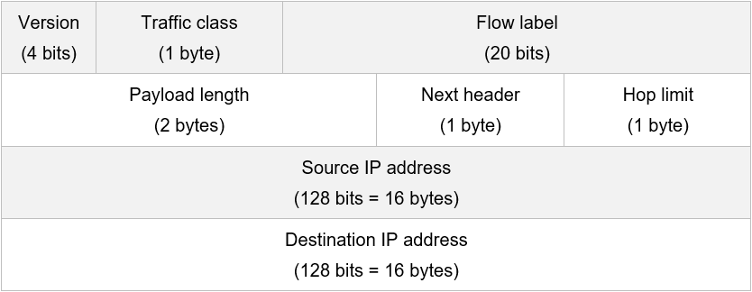
TCP/UDP
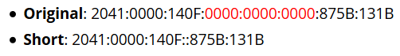
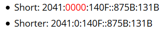
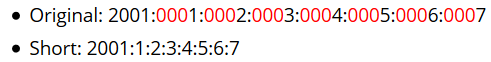
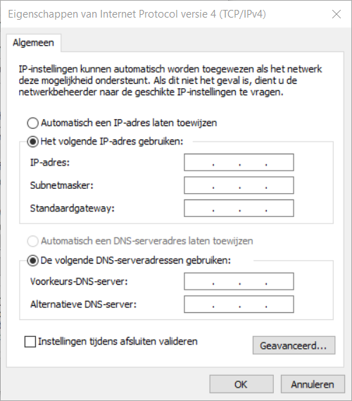
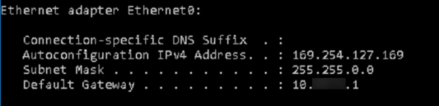
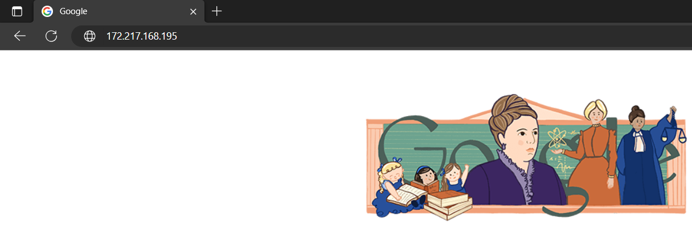
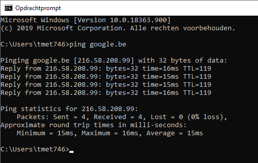
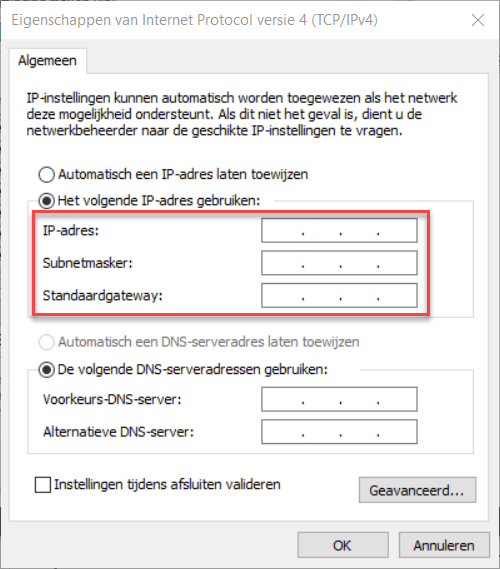
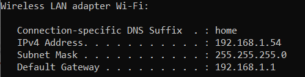
Subnetmasker?
Default gateway?
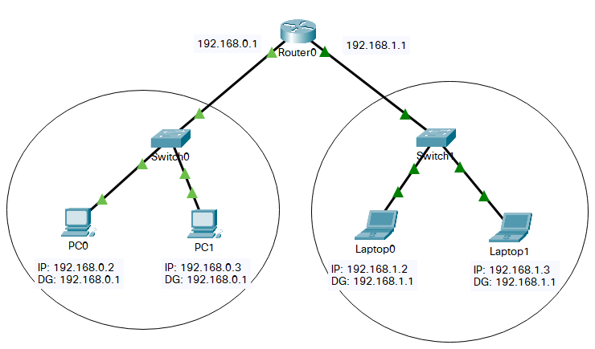
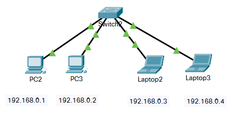
Maar…
Als een pakket van 192.168.0.1 naar 192.168.1.1 moet…
Moet dat pakket dan naar buiten het netwerk of niet?
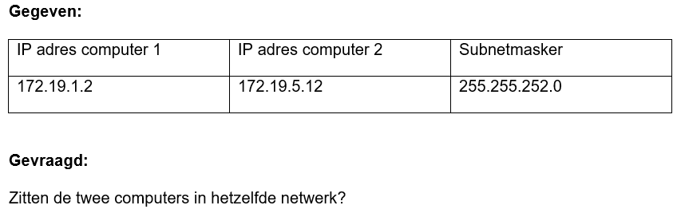
172 = 1010 1100
19 = 0001 0011
252 = 1111 1100
172 = 1010 1100
= 0001 0011
2 = 0000 0010
12 = 0000 1100
252 = 1111 1100
255 = 1111 1111
Je computer zit in het iotroam netwerk met IP: 172.19.2.12 en SNM: 255.255.252.0
Je Raspberry PI zit ‘ergens’ in hetzelfde netwerk
Je wil het IP adres van de PI te weten komen via een scan met nmap.
Wat is het adres van het netwerk?
Wat is de lengte van het subnetmasker?
Welk commando ga je in nmap moeten ingeven om het volledig netwerk te scannen?
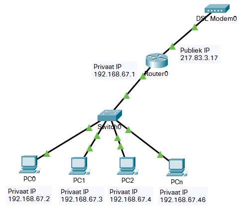
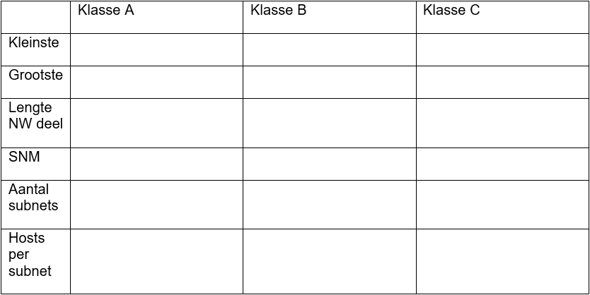
Uit het hoofd
kennen!
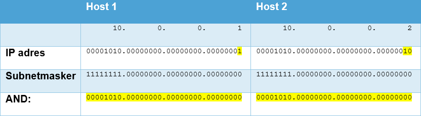
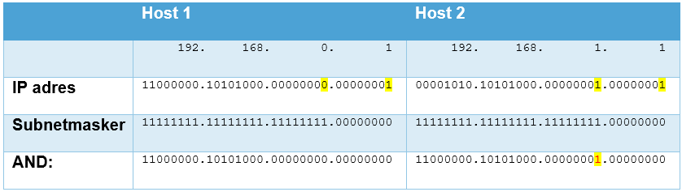
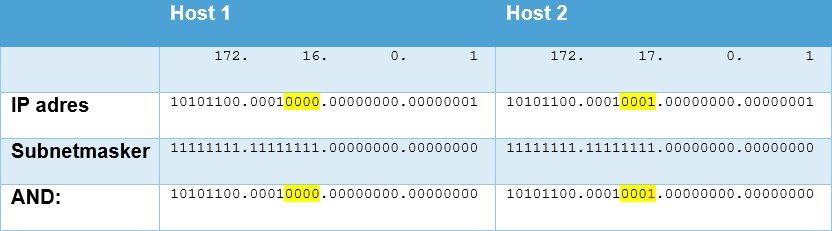
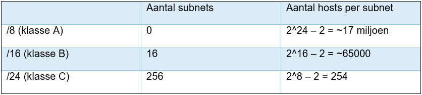
Als je meer subnets wil en/of minder hosts per subnet dan
kan je ‘subnetten’
(2^0 = 1)
(2^4 = 16)
(2^8 = 256)
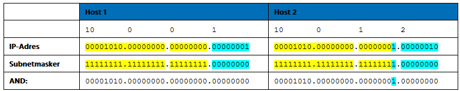
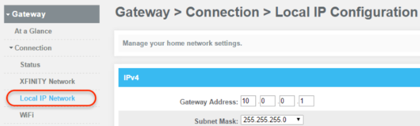
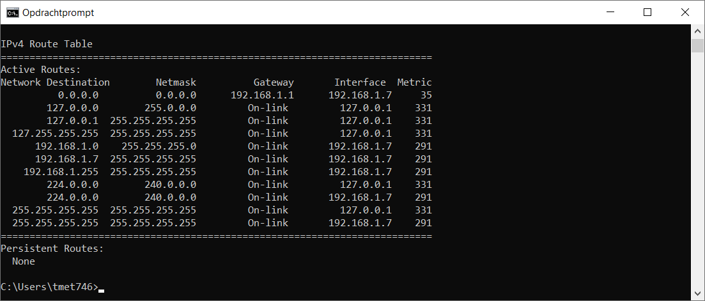
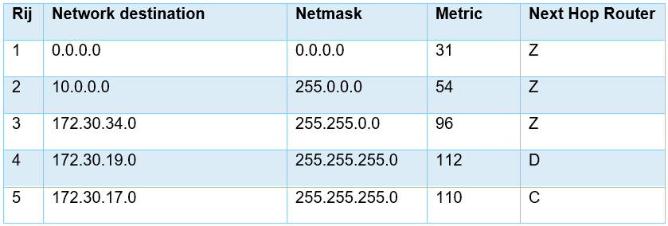
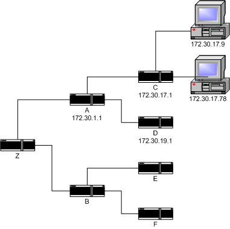
Pakket met bestemming 10.5.6.3
Welke rij is de beste match?
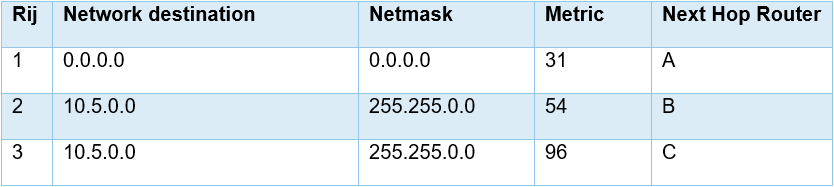
Pakket met bestemming 10.5.6.3
Welke rij is de beste match?